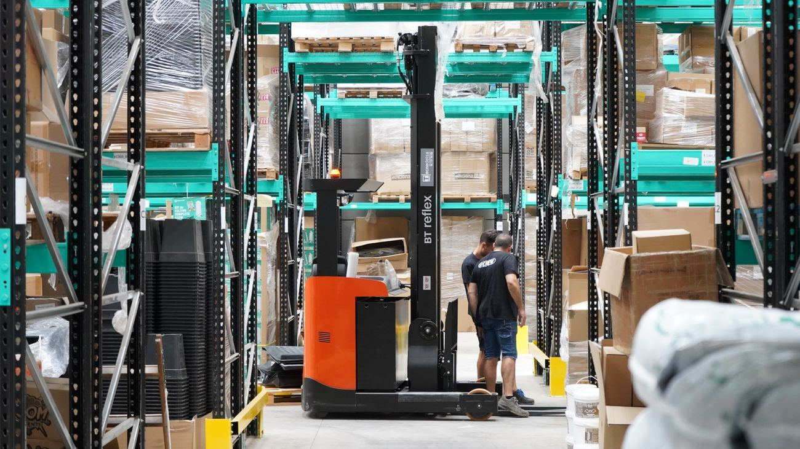
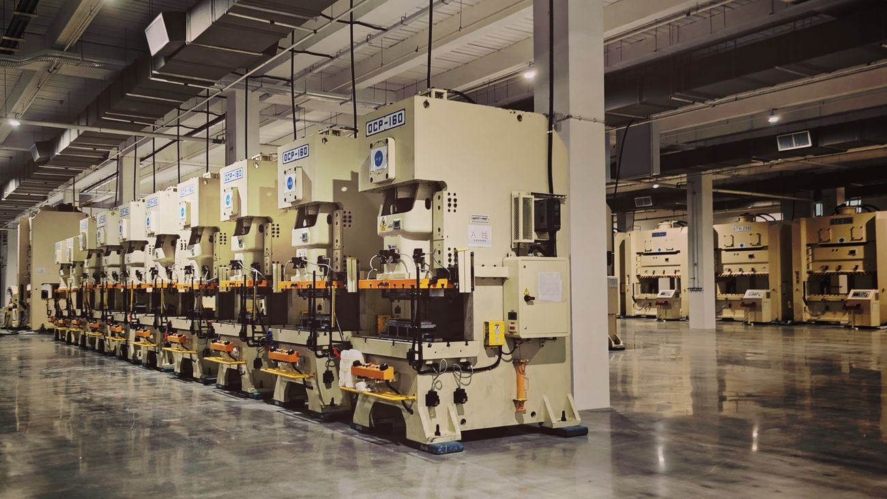
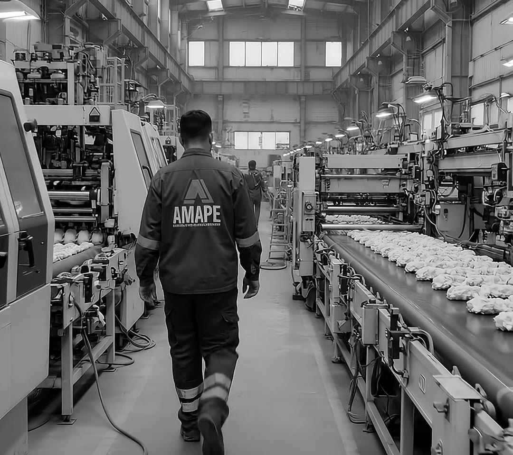

Transfer plan
Equipment inventory, move sequence, owners and schedule.
Your line, running in its new home.
We relocate complete lines and processes from one plant to another and leave them running at the new site, keeping your customer deliveries on track.



If any of these sound familiar, we can help.
We take on what your plant needs: all of it or just one part.
Equipment inventory, move sequence, owners and schedule.
Equipment placement and material flow defined before anything moves.
Build-ahead production to cover your customers during the move.
Coordination of teardown, rigging, transport and installation.
Testing, first runs and process validation at the new site.
On-floor support until the line runs steadily.
One team from start to finish.
We document the current process, equipment and capacity.
We define layout, schedule, risks and inventory bank.
We relocate, install and connect the line at the new site.
We validate the process and support you through stable production.

Let's talk, no strings attached, and we'll tell you how we can help.